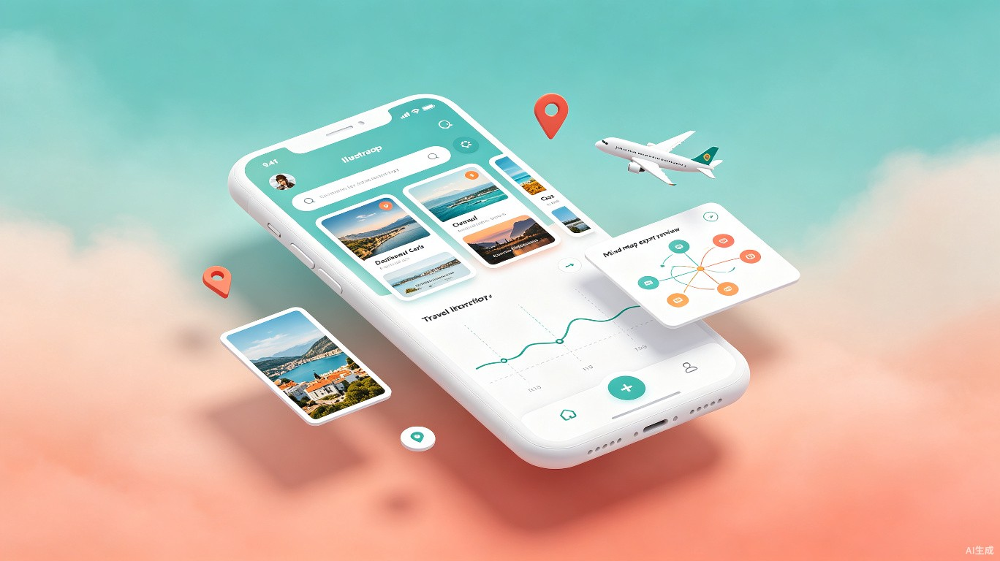

AI旅游攻略智能生成助手 — 把碎片灵感变成完美行程

旅思是一款基于AI大模型的旅游攻略智能生成应用。用户只需将小红书、抖音等平台的旅行内容链接粘贴到App中，系统即可自动解析图文视频内容，提取地点、时间、费用、玩法标签等关键信息，并智能生成结构化的旅游攻略。
想解决什么问题：旅行规划者在小红书、抖音收藏了大量碎片化攻略内容，但手动整理成可执行行程耗时耗力，且难以形成全局视角。
灵感来源：每次旅行前，笔者都会在小红书收藏几十篇攻略，却永远停留在"收藏夹吃灰"的状态——直到出发前一天才匆忙拼凑行程。如果有一个工具能自动把这些碎片整理成结构化的攻略，该多好？
产品形态：一款跨平台移动App（Flutter），支持链接导入、AI智能生成、多维度查看攻略，并可导出可编辑的思维导图。
支持小红书、抖音、B站、快手等多平台链接解析，复制粘贴即可自动抓取图文视频内容，无需手动录入。
基于大语言模型自动识别地点、时间、费用、交通方式、推荐等级，将非结构化内容转化为结构化数据。
支持按日期、按城市、按主题三种维度灵活切换，时间线/地图/卡片/列表四种查看模式自由切换。
自动生成思维导图并导出为Markdown/XMind格式，支持Web端在线编辑，手机电脑无缝协作。
喜欢自己安排行程，在小红书收藏了上百篇攻略。痛点是收藏夹内容杂乱，每次规划都要反复翻找、手动记录，效率极低。
负责为小团队规划行程。痛点是信息分散在不同平台，整理成统一格式的攻略费时费力，且难以和同伴协作修改。
需要产出高质量攻略内容。痛点是素材整理成本高，从海量收藏中提炼精华并结构化输出耗时巨大。
小唯计划暑假去云南旅行，她在小红书上收藏了30多篇大理、丽江的攻略笔记。打开旅思App，批量粘贴这些链接，10分钟后，一份按日期排好的7日云南攻略就生成了——包括每日行程、景点介绍、交通建议、预算汇总。她导出脑图发给同行的好友，大家一起在电脑上调整细节，最终版本自动同步到她的手机。
flowchart TB
subgraph Client["客户端层"]
A1["iOS App (Flutter)"]
A2["Android App (Flutter)"]
A3["Web脑图编辑器"]
end
subgraph Gateway["网关层"]
B["Nginx / API Gateway"]
end
subgraph Service["应用服务层"]
C1["用户服务"]
C2["链接解析服务"]
C3["AI内容处理"]
C4["攻略生成引擎"]
C5["脑图导出服务"]
end
subgraph Data["数据层"]
D1["PostgreSQL"]
D2["Redis缓存"]
D3["对象存储OSS"]
end
subgraph Third["第三方服务"]
E1["AI大模型 API"]
E2["地图服务"]
E3["推送服务"]
end
A1 --> B
A2 --> B
A3 --> B
B --> C1
B --> C2
B --> C3
B --> C4
B --> C5
C2 --> D3
C3 --> E1
C4 --> D1
C5 --> D3
C1 --> D1
C1 --> D2
C4 --> E2
| 层级 | 技术选型 | 说明 |
|---|---|---|
| 移动端 | Flutter | 一套代码覆盖iOS/Android，热重载开发效率高 |
| 后端API | Python FastAPI | 异步高性能，适合AI密集型任务 |
| 链接解析 | Python + Playwright | 无头浏览器渲染，应对反爬机制 |
| AI处理 | GPT-4 / DeepSeek API | 大模型实现内容理解与攻略生成 |
| 数据库 | PostgreSQL + Redis | 结构化数据+缓存的标准组合 |
| 脑图编辑 | simple-mind-map | 开源Web脑图库，支持多种格式导出 |
sequenceDiagram
actor U as 用户
participant App as 旅思App
participant Parser as 链接解析服务
participant AI as AI处理引擎
participant DB as 数据库
U->>App: 粘贴小红书/抖音链接
App->>Parser: 发送URL
Parser->>Parser: 模拟请求/渲染页面
Parser-->>App: 返回标题、正文、图片
App->>AI: 发送原始内容
AI->>AI: NLP提取POI/时间/费用/标签
AI->>AI: 攻略编排与组装
AI-->>App: 返回结构化攻略JSON
App->>DB: 保存攻略数据
App-->>U: 展示多维度攻略
U->>App: 选择导出脑图
App-->>U: 下载Markdown/XMind文件
将原本需要数小时的人工整理工作压缩到几分钟。用户从"收藏夹吃灰"到" actionable 行程"的转化效率提升10倍以上。
通过AI自动提取和结构化，用户不再需要记忆分散在各平台的碎片信息，脑图导出功能帮助用户建立全局行程视角。
降低旅行规划门槛，让更多人享受自由行的乐趣。促进优质旅行内容的二次利用，减少信息浪费，提升整个旅游内容生态的效率。
可延展至酒店/门票预订导流、旅行社交、UGC内容平台等场景。据艾瑞咨询数据，中国在线旅游市场交易规模超万亿，智能行程规划是高增长细分赛道。
小红书链接手动粘贴解析、基础信息提取、简单攻略生成（按日期排列）、移动端基础查看、用户登录注册。交付内部测试版。
支持多平台（抖音、B站等）、AI智能提取地点/时间/费用、按城市/主题分类、地图模式查看、攻略编辑与分享功能。交付公测版。
脑图自动生成与导出、Web端脑图编辑器、多人协作编辑、智能推荐（相似景点、路线优化）、离线查看。交付正式版v1.0。
用户反馈驱动优化、性能提升、新平台支持、AI模型持续调优、探索商业化路径。
把收藏夹里的碎片灵感，变成说走就走的完美行程。